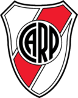

River Plate
El mas grande,
lejos
River plate
es un equipo argentino de futbol
El Monumental de Nuñez (Antonio Vespucio Liberti)
Es el estadio mas grande de Argentina con capacidad para 70 mil espectadores
En este estadio se jugo la final del mundial 78
Nunca se perdio una final de copa internacional
Titulos de River de la era Gallardo
Año
Campeonato
2014 📅
Copa Sudamericana 🏆
2015 📅
Copa Libertadores 🏆
Mejores entrenadores
Gallardo
⭐⭐⭐⭐⭐
Ramon
⭐⭐⭐⭐
Bambino Veira
⭐⭐⭐
Tolo Gallego
⭐⭐
Almeyda
⭐
Ultimas cogidas a Boca
Ultimas cogidas a Boca